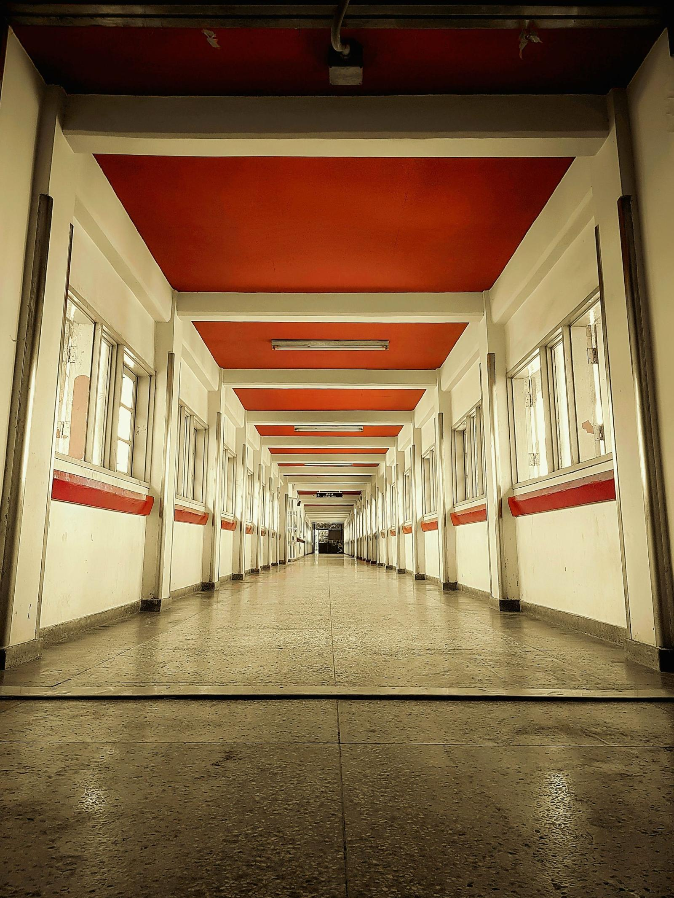

Smart glasses are becoming increasingly popular and are finding their way into the classroom. Many are focusing on cheating and privacy concerns, but are there potential benefits that we might not be seeing? Let's take a look.
Do smart glasses pass the eye test? Are the benefits clear? Are there too many risks?
When I started university in 2003, very few students had cellphones and even fewer had laptops. By 2010 nearly every student in my B.Ed program had a laptop but smartphones were still rare. Now smartphones are ubiquitous and wearable smart devices like watches and glasses are proliferating rapidly.
"Smart glasses" covers a wide range. Jisc's National Centre for AI compares models from a wide range of options, including $105 audio-only frames to $6,770 comprehensive assistive devices that go beyond the capabilities of other kinds of devices.
Use the interactive below to compare four common mobile and wearable form factors.
Explore this hypothetical Grade 5 math lesson through display glasses, worn by a student or by the teacher. Everything on the lens uses a feature listed for a current model. The room, the lesson and the people are invented.
Live captions of the teacher's voice. Jisc lists glasses that caption speech in real time for deaf and hard of hearing users, such as the XRAI ar2.
Source: Jisc, Jan 2026
Real-time translation, listed for the Meta Ray-Ban Display. A student still learning English could follow the lesson as it happens. Spanish is only an example.
Source: Jisc, Jan 2026
An AI answer about what the wearer is looking at, as described in Meta's July 2026 update. The same feature that helps one student understand is a shortcut on a quiz for another. The answer shown is an illustration, not a recorded output.
Source: Tech2, July 2026
Calendar items shown in the lens, listed in Meta's July 2026 update. It is a small feature, but it keeps a teacher's eyes on the room instead of on a phone, in my view.
Source: Tech2, July 2026
A student speaks Spanish and the teacher reads English. Translation is listed for the Meta Ray-Ban Display. It could help with newcomer students and family conversations. I have not tested how it copes with a noisy classroom.
Source: Jisc, Jan 2026
A photo of a student's work, taken hands free. Photo capture is a listed feature. Jisc reports that recording indicators exist but have been bypassed, so in a classroom this is a consent and policy question before it is a convenience.
Source: Tech2, July 2026; Jisc, Jan 2026

Bans and workarounds: institutional responses
Photo 2 · PexelsPick an assessment format below to see what a lens could show the student in real time.
Some educators are already handling the emergence of smart glasses in a different way, by changing what they assess and how. Conversations, portfolios, process evidence, ungrading, and other approaches that are more resistant to quick answers supplied by smart devices.
Each card compares glasses with the tool a teacher would use today.
Do smart glasses pass the eye test?
Photo 3 · PexelsI am not arguing that smart glasses should come without rules, but smart glasses are just another kind of technology. Metal can be sharpened into a sword or a sickle and it is up to the creator and the wielder to decide on purpose which one they are making and how they'll use it. Every tool carries the possibility of abuse, and the more powerful a tool is, the more important it is to set firm limits on how it can be used. The potential harms are real, such as cheating on exams, and the surreptitious filming of others without their knowledge, but we should not stop looking for what these tools can do well and could do even better as they are developed further and teaching practices catch up.
Calculators were once banned and smartphones are still banned in many places, so I fully anticipate waves of bans and restrictions on smart glasses over the next few years. But one day, I do believe that they will be widely accepted as just another kind of technology whose affordances allow for unique and impactful learning experiences in classrooms that embrace their use in thoughtful and well-designed ways.